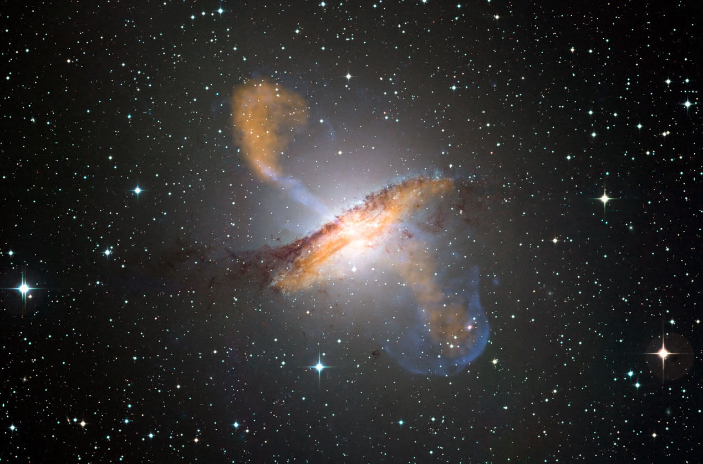
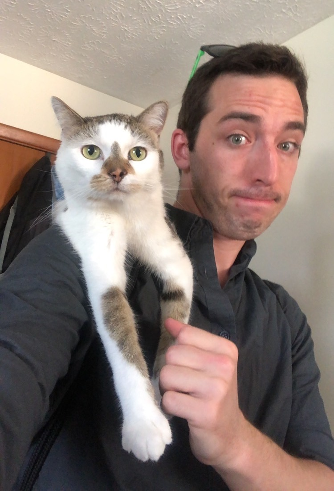
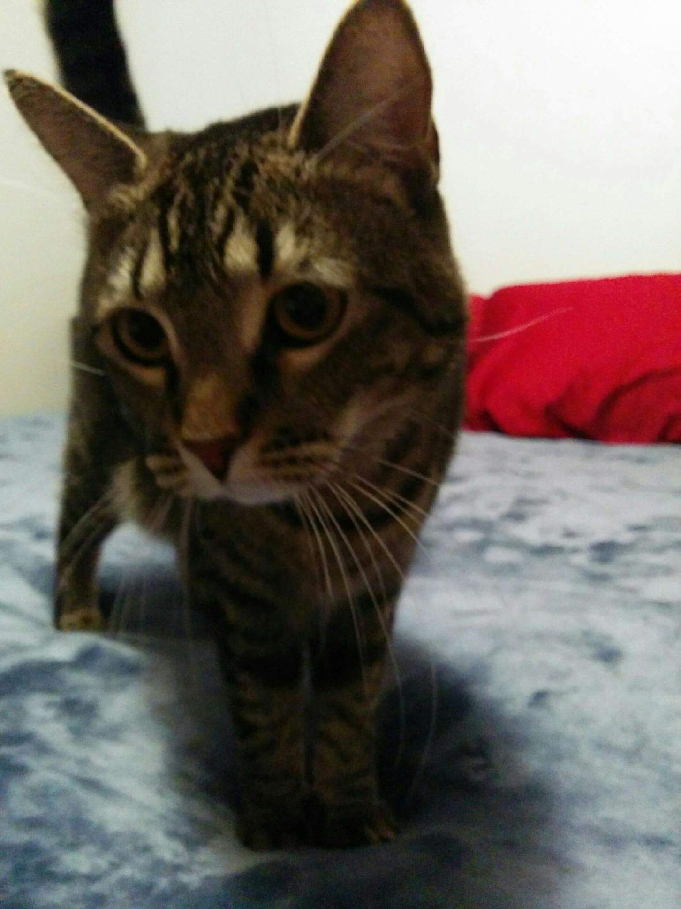
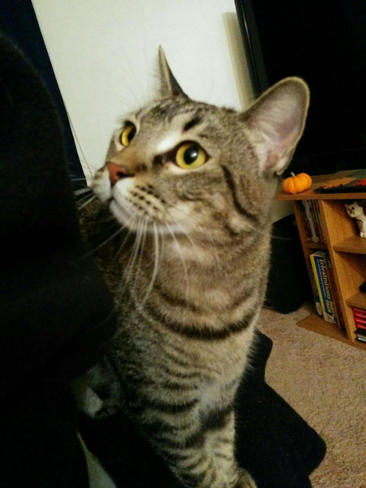

About Me
I am a graduate student at Indiana University and a leader in the Star Formation Across Cosmic Time (SFACT) survey. Together with my advisor, John Salzer, and fellow graduate student, Jennifer Sieben, we discover and study emission line galaxies at different points in our universe's history.
In addition to the SFACT survey, I am also interested in learning and applying data mining and machine learning techniques to research problems in astronomy. I have taken graduate level data mining and machine learning courses at IU and received my minor in Scientific Computing in 2016.
I received my bachelor's degree in Astronomy and Physics, with a minor in Mathematics, from the University of Wisconsin-Madison. While at UW I constructed radiative transfer models of edge-on spiral galaxies, worked to determine the Milky Way's rotation curve, and converted old astronomy code from IDL to Python.
In my free time, you'll find me fencing and teaching foil through the Fencing Club at Indiana University, listening to audiobooks, and tutoring undergraduates in math and physics.
Research
My current research is focused on discovering and studying emission line galaxies through the Star Formation Across Cosmic Time (SFACT) survey. Though we will discover many star-forming galaxies through the survey, I am more interested in the active galactic nuclei (AGN) that we will discover as part of the survey. I also use a spectral synthesis code called Cloudy to generate models of AGN with different metallicities and use these models as evidence for chemical evolution over time.

Active Galaxies Across Cosmic Time
 Modeling AGN with Cloudy
Modeling AGN with Cloudy
SFACT
Active Galaxies Across Cosmic Time
Advisor: Dr. John Salzer
What are AGN?
Active galactic nuclei (AGN) are the most luminous, persistent sources of light in the universe, often outshining their entire host galaxy and all the stars therein. The light coming from these compact objects is so bright and energetic that it cannot possibly be produced by stars. The only possible mechanism for producing so much energy in our universe is the accretion of matter onto a supermassive black hole located at the host galaxy's center. As it falls onto the black hole, before it passes the event horizon from which no light can escape, the material heats up through friction and produces light which we can observe.
What is SFACT?
As part of the Star Formation Across Cosmic Time (SFACT) survey, my collaborators and I discover AGN at different points in our universe's history. Because it takes light time to travel across the vastness of space, when we look out into our universe we are also looking back in time. Each galaxy we discover at larger distances away from us is like looking farther back into the history of our universe. The SFACT survey is collecting a sample of AGN at different distances, allowing us to explore how these objects change over time as our universe evolves.
Why is this important?
It is important to study how galaxies change over time to better understand how galaxies form and evolve. A current theory is that larger galaxies form through the merging of smaller galaxies. This merging triggers star formation through gas collision and causes gas to fall to the centers of galaxies, producing AGN. Therefore, there are strong theoretical reasons to expect that star formation and AGN activity are linked. A lot is known about the history of star formation in our universe but little is known about the history of AGN, specifically Seyfert galaxies (i.e. galaxies whose AGN produce comparable light to their stars).
What will we learn from SFACT?
This project's goal is to explore the connection between AGN and star-forming galaxies and is part of my dissertation research to study how AGN evolve over time. With the high sensitivity of the SFACT survey, I will be able to robustly detect AGN out to large distances and can compare the density of AGN to the density of star-forming galaxies, exploring any connection between the two. The spectra gathered as part of the SFACT survey will also allow measurements of the elemental abundances of each of the AGN host galaxies and could provide evidence for chemical evolution over time. Therefore, this project will provide valuable insight into how AGN evolve over time and will reveal a piece of the mystery that is the history of our universe.
::before
"Close"
Modeling AGN with Cloudy
Evidence For Chemical Evolution Over Time
Advisor: Dr. John Salzer
What is Cloudy?
Cloudy is a spectral synthesis code. It is designed to model the interstellar medium in different situations.
What do I use Cloudy for?
I use Cloudy to simulate the narrow-line regions of active galactic nuclei (AGN) at different elemental abundances. I have two samples of AGN detected via different emission lines: (1) an [O III] detected, high-redshift sample and (2) a Hα detected, low-redshift sample. Both samples come from the KPNO International Spectroscopic Survey. If the models with lower elemental abundances match the older, high-redshift sample, and the models with the higher elemental abundances match the younger, low-redshift sample, then these models could show evidence of chemical evolution in the nuclear regions of these galaxies!
What are AGN?
Check out my AGN explanation here.
Why is this important?
One of the most fundamental questions in astronomy is where did everything come from? How did galaxies form and how do they change over time? This project's goal is to find evidence to help answer these questions. By comparing these models and observations, we are able to peer into the history of our universe and see how the chemical composition of galaxies change over time.
::before
"Close"
Teaching

Instructor
I have designed and taught several introductory astronomy courses while at IU. As part of designing these courses I was responsible for creating the slides, exams, and homework, teaching the lectures, holding office hours, grading, and running any extra credit opportunities and in class demonstrations. The classes I have taught include:
- A105: Stars and Galaxies
- A107: The Art of Astronomy
Associate Instructor
As an Associate Instructor, I assisted the Professof for classes of 200 or more students. I was mostly responsible for hosting review sessions and office hours, grading, attending all classes, and running extra credit activities. The classes I have been an associate instructor for include:
- A100: The Solar System
- A103: The Seach for Life in the Universe
- A105: Stars and Galaxies
- A115: Birth and Death of the Universe
Private Tutor
Not only am I a teacher, but I am also a private tutor. Most of the time I tutor undergraduate students in math and physics. If you or someone you know is struggling and needs a little bit of additional instruction, feel free to contact me.
::before
"Close"
Outreach
Kirkwood
The other Indiana University graduate students and I frequently host open house nights at Kirkwood Observatory. If you ever want to view Jupiter, Saturn, the Moon, or one of the many other objects in our night sky, come to Kirkwood when the weather is behaving. Trust me, it is a lot of fun and you'll learn something new.
Science Fest and Science Olympiad
In addition to Kirkwood, the I participate in Indiana University Science Fest and Indiana Science Olympiad every year. As part of these two events I am either running different activities during Science Fest or writing and grading Science Olympiad astronomy exams.
::before
"Close"
Personal Interests
Audiobooks
- The Stormlight Archive by Brandon Sanderson
- The Name of the Wind by Patrick Rothfuss
- Mistborn by Brandon Sanderson
- The Wheel of Time by Robert Jordan
Media/Entertainment
- Critical Role
- All things Star Wars
- Halo: The Master Chief Collection
- Hamilton
For Fun
I am an experienced fencer, a novice rock climber, and I'm just starting to learn how to cook. Sometimes I'll step out of my own shoes and into Ivan's, the often forgetful paladin in my D&D campaign.
I also have two adorable cats.
::before
"Close"
My Cats
Meet Mr. Squiggles and Princess
Mr. Squiggles

Princess


Contact Me
E-mail:
Email
: carrdj@indiana.edu
GitHub:
GitHub
: carrdj
Address:
Indiana University
Astronomy Department, Swain West 324
727 E. 3rd Street
Bloomington, IN 47405